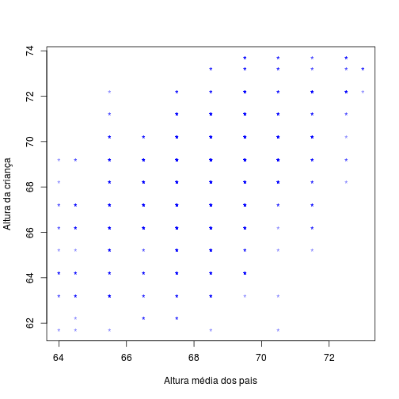

Pacote e banco de dados
library(psych)
data(galton)
Henrique Gomide
CREPEIA, PET - Psicologia
Pacote e banco de dados
library(psych)
data(galton)
r = 0.3

r = 0.6
r = 0.9
plot(galton$parent, galton$child, xlab = "Altura média dos pais", ylab = "Altura da criança",
col = rgb(0, 0, 1, alpha = 0.5), pch = "*")

Variáveis se distribuem normalmente e são númericas?
Uma variável é númerica e outra categórica dicotômica
cor.test(x, y, method, alternative, ...)

cor.test(galton$parent, galton$child, alternative = "two.sided", method = "pearson")
##
## Pearson's product-moment correlation
##
## data: galton$parent and galton$child
## t = 15.71, df = 926, p-value < 2.2e-16
## alternative hypothesis: true correlation is not equal to 0
## 95 percent confidence interval:
## 0.4064 0.5081
## sample estimates:
## cor
## 0.4588
Field, A. P., & Miles, J. (2012). Discovering statistics using R. Los Angeles; London: SAGE.